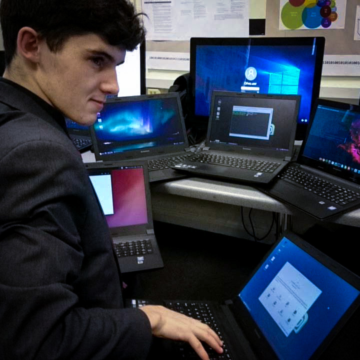
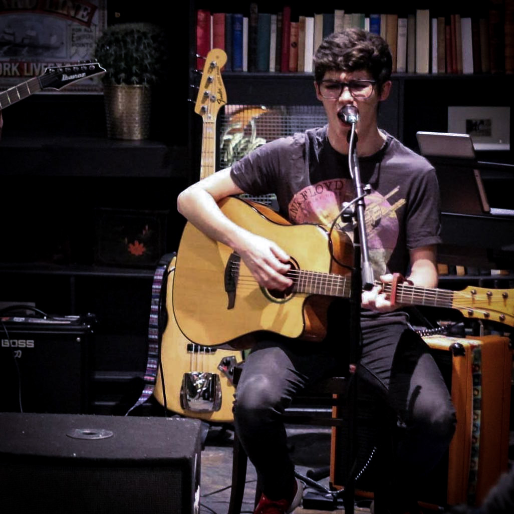

Early life
I was born in South Africa, in September 1999. The apartheid had been over for many years but it was still fresh in everyone's minds, and the aftermath was (and is) very much still there. I grew up outside of Johannesberg, and I saw the face of poverty on a daily basis. Still, my family was fortunate enough to have our own computer, which I learnt how to use very quickly. One of my earliest memories is learning how to play different games on the computer, and then teaching my sister how to play them. There were two things in my life that I truly loved - music and computers, and not much has changed since then. When I was 7 years old we immigrated to the UK, where I still love. Throughout my childhood, my fascination with computers had never stopped.

School days
I went to high school at St Columba's College. I loved our IT classes each week, but unfortunately when itcame to my GCSEs, I wasn't able to do Computing, as it wasn't available yet. This didn't stop me from following my passion, and at age 14 I successfully built my first computer, which I still use to this day (although it has seen some upgrades). When I was choosing my A-levels, Computer Science had become an option for the first time, and I didn't hesitate for a second to choose it, alongside Maths and Further Maths. Throughout the two years that I was on the course, I was constantly tikering with computers in different ways, whether that was swapping out hardware parts or trying out countless Linux distros (and bbreaking each of them as I went along). I built a password manager for my coursework, and was graded 100% on it by my teacher. I had applied to the University of Dundee, and I made the cut by the end of my time at school.

Now
I'm currently in my first year of Applied Computing at the University of Dundee. While my main language was Python back in high school, we now use Java, and I've caught on quickly with this. Although I focus more of my time around coursework, I still save time for tinkering with computers, and as you can see in that piccture, my love for music hasn't died either. I've consistently been achieving high grades in my coursework assignments, and I always enjoy the work. This website is part of my WWW Authoring coursework.
I hope to do many more projects such as this one in my time at Dundee and in my career beyond that. Computing has been, is, and always will be a massive part of my life.